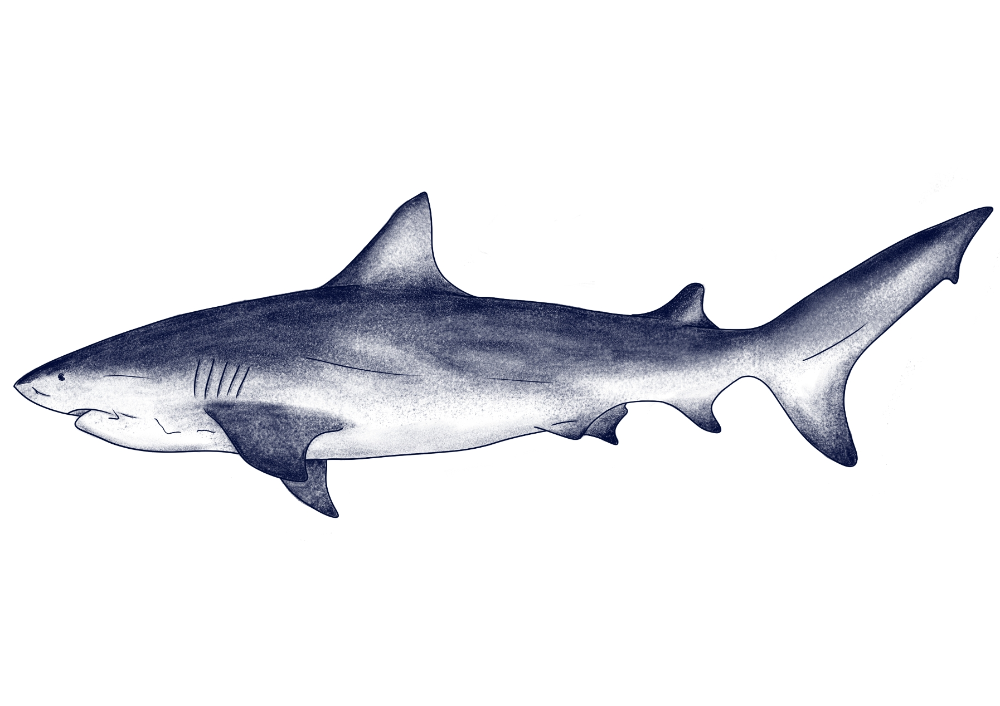

Carcharhinus leucas
Tiburón Sarda

El Tiburón Sarda (Carcharhinus leucas) es una especie de tipo fauna perteneciente a la familia Carcharhinidae.
Se distribuye en Tzonas costeras, estuarios, desembocaduras de ríos y ocasionalmente en aguas dulcesT, como el Amazonas, y es nativo de la zona de Punta del Diablo. Su Testado de conservación es vulnerable, debido a su baja tasa de fecundidad, la pesca tanto intencional como accidental y la degradación de su hábitat..
Su morfología se destaca por un tamaño promedio de 2,1 a 4 metros de largo, un cuerpo robusto y macizo, dorso gris o café-verdoso, vientre blanco, y un hocico corto y notablemente ancho. También resalta por su extraordinaria capacidad de tolerar el agua dulce, gracias a adaptaciones fisiológicas únicas.
Presenta hábitos alimentarios carnívoros , consumiendo principalmente peces óseos, otros tiburones (incluidos individuos de su propia especie), rayas, tortugas marinas, delfines, crustáceos y aves. Se caracteriza por vivir de forma solitaria, aunque ocasionalmente puede encontrarse en pequeños grupos cerca de fuentes de alimento o durante la época de apareamiento.